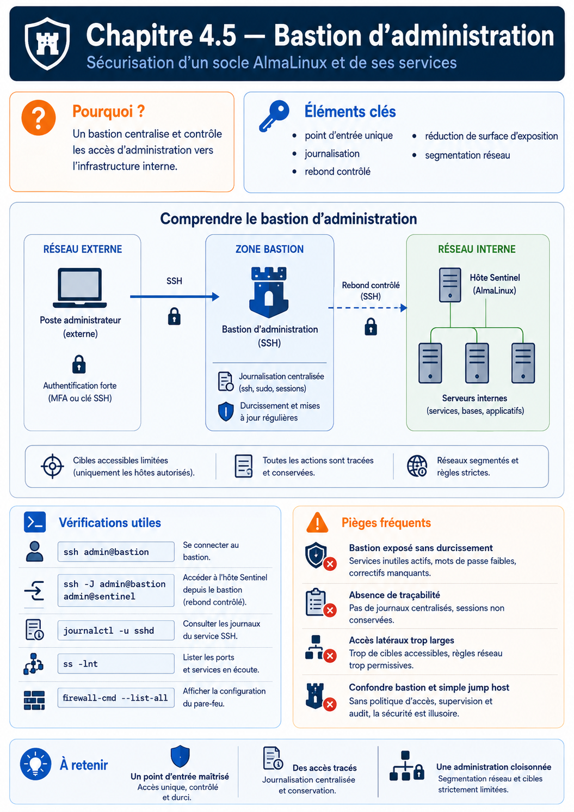

Chapitre 4.5 — Bastion d'administration
Campagne 4 — SSH et accès distant
« Le serveur SSH le plus sécurisé est souvent celui qui n'est jamais directement accessible depuis Internet. »
Vous êtes ici
Partie I — Construire un socle sécurisé
Campagne 4 — SSH et accès distant
4.1 Architecture d'OpenSSH
4.2 Authentification par mot de passe
4.3 Authentification par clés
4.4 Durcissement de sshd_config
► 4.5 Bastion d'administration
4.6 Journalisation et audit SSH
4.7 Protection contre les attaques
4.8 Mission : administration sécurisée de Sentinel
Objectifs pédagogiques
À la fin de ce chapitre, vous serez capable de :
- comprendre le rôle d'un bastion d'administration ;
- distinguer un serveur de production d'un serveur de rebond ;
- comprendre pourquoi les infrastructures modernes n'exposent plus directement leurs serveurs ;
- mettre en place une architecture d'administration sécurisée ;
- intégrer Sentinel dans une chaîne d'administration professionnelle.
Pourquoi ce chapitre existe
Depuis le début de cette campagne, nous avons cherché à sécuriser OpenSSH. Nous avons :
- renforcé l'authentification ;
- supprimé les mots de passe ;
- durci
sshd_config.
Mais une question demeure.
Pourquoi exposer directement un serveur de production à Internet ?
Même parfaitement configuré, un serveur SSH reste :
- détectable ;
- attaquable ;
- scannable.
Une approche beaucoup plus robuste consiste à supprimer totalement cette exposition. C'est précisément le rôle d'un bastion d'administration.
Théorie détaillée
Qu'est-ce qu'un bastion ?
Un bastion est un serveur spécialement dédié à l'administration. Son rôle est extrêmement simple. Il constitue l'unique point d'entrée vers les autres serveurs. Visuellement.
Les serveurs internes ne sont plus accessibles directement.
Pourquoi utiliser un bastion ?
Imaginons une infrastructure de vingt serveurs. Sans bastion.
Chaque serveur devient une cible. Chaque serveur reçoit :
- des scans ;
- des attaques ;
- des tentatives de brute force.
Maintenant, avec un bastion.
La surface d'attaque est immédiatement divisée.
Une analogie simple
Imaginez un immeuble. Sans bastion.
Avec un bastion.
Le bastion joue exactement le rôle du hall d'entrée sécurisé.
Ce que fait réellement un bastion
Contrairement à une idée reçue, le bastion ne remplace pas SSH. Il exécute lui-même OpenSSH. Il agit simplement comme un intermédiaire.
Deux connexions SSH existent donc. Une première.
Puis une seconde.
Le bastion devient le seul serveur autorisé à dialoguer avec les machines internes.
Où placer le bastion ?
Dans une architecture classique, on distingue plusieurs zones réseau.
Le bastion se situe généralement :
- dans une DMZ ;
- ou dans un réseau d'administration dédié.
Il ne doit jamais être placé au hasard. Sa position fait partie intégrante de l'architecture de sécurité.
Les serveurs internes deviennent invisibles
L'un des plus grands avantages est celui-ci. Prenons Sentinel. Sans bastion.
Tout le monde peut détecter son existence. Avec un bastion.
Même un scan complet du réseau ne verra jamais le serveur. Il devient invisible depuis l'extérieur. Cette réduction de visibilité constitue un gain de sécurité considérable.
Une architecture complète
Nous obtenons maintenant.
Le bastion devient le point central de toute l'administration.
Le principe du rebond
Le terme anglais est souvent : Jump Host ou Jump Server Pourquoi ? Parce que l'administrateur effectue un "rebond".
Aujourd'hui, OpenSSH permet même d'automatiser ce rebond, comme nous le verrons un peu plus loin avec : ProxyJump Cette fonctionnalité simplifie énormément l'administration des grandes infrastructures.
Les différents types de bastions
Toutes les infrastructures n'utilisent pas exactement le même modèle. On distingue généralement plusieurs architectures.
Bastion unique
La plus simple.
Cette architecture est suffisante pour :
- une PME ;
- un laboratoire ;
- un environnement de développement.
Bastions redondants
Dans une infrastructure critique, le bastion devient lui-même un point sensible. On le redonde.
La perte d'un bastion ne bloque plus l'administration.
Bastion par zone
Certaines entreprises vont encore plus loin.
Chaque environnement possède son propre niveau de sécurité.
Le bastion ne doit pas être un serveur "normal"
Une erreur fréquente consiste à transformer un serveur classique en bastion. Par exemple.
SSH
+
Apache
+
MariaDB
+
Podman
+
Docker
+
Grafana
C'est une très mauvaise idée. Pourquoi ? Parce que le bastion constitue le cœur de l'administration. Il doit rester aussi simple que possible. En pratique, un bastion contient souvent uniquement :
- OpenSSH ;
- les outils d'administration ;
- les journaux ;
- éventuellement un agent de supervision.
Moins il exécute de services, plus sa surface d'attaque est réduite.
Le bastion devient un point de contrôle
Puisque tous les administrateurs passent par lui, il devient extrêmement intéressant. Toutes les connexions peuvent y être :
- authentifiées ;
- journalisées ;
- corrélées ;
- supervisées.
Visuellement.
Le bastion devient alors un véritable poste de contrôle.
Une identité nominative
Le bastion permet également d'imposer une règle essentielle. Chaque administrateur utilise son propre compte.
Il n'existe plus de compte partagé. Toutes les opérations deviennent attribuables. Nous retrouvons ici un principe fondamental des audits de sécurité.
Le rebond automatique avec ProxyJump
Pendant longtemps, les administrateurs réalisaient deux connexions.
ssh bastion
Puis.
ssh sentinel
OpenSSH simplifie énormément cette opération.
ssh -J bastion sentinel
Le client établit automatiquement le rebond. L'utilisateur a l'impression de se connecter directement au serveur cible. En réalité, la connexion traverse toujours le bastion. Schématiquement.
Cette fonctionnalité est aujourd'hui très utilisée dans les grandes infrastructures.
Avec ProxyJump, le client ouvre un canal de relais sur le bastion puis négocie lui-même la connexion SSH avec la cible. La clé privée destinée à Sentinel reste sur le poste : il n'est pas nécessaire de la copier sur le bastion ni d'activer le transfert d'agent. Le bastion voit les métadonnées du relais, mais ne déchiffre pas la session SSH interne ; il doit néanmoins être durci, car sa compromission permettrait de perturber ou de rediriger les connexions.
Simplifier avec ~/.ssh/config
OpenSSH permet également de définir des alias. Par exemple.
Host sentinel
HostName 10.0.10.12
User admin
ProxyJump bastion
L'administrateur peut ensuite simplement taper.
ssh sentinel
Le client applique automatiquement :
- le bon utilisateur ;
- la bonne adresse ;
- le rebond sur le bastion ;
- la clé SSH adaptée.
Cette approche réduit considérablement les erreurs humaines.
Une architecture Sentinel
Notre laboratoire peut désormais être représenté ainsi.
Toutes les opérations d'administration passent désormais par un point unique, facilitant :
- les audits ;
- la supervision ;
- la détection d'incidents ;
- la gestion des accès.
Approfondissement
Le bastion protège autant les serveurs que les administrateurs
Lorsqu'on découvre le principe du bastion, on pense immédiatement :
« Il protège les serveurs. »
C'est vrai. Mais ce n'est qu'une partie de son intérêt. Il protège également les administrateurs eux-mêmes. Pourquoi ? Parce qu'il devient le point unique où sont appliquées toutes les politiques de sécurité. Par exemple.
Sans bastion, il faudrait configurer la même politique sur chaque machine. Avec un bastion, une seule configuration suffit.
Le bastion devient l'identité de l'administration
Dans une infrastructure moderne, les serveurs internes ne connaissent parfois plus les administrateurs. Ils ne connaissent que le bastion. Visualisons. Sans bastion.
Avec bastion.
Le bastion devient donc un véritable courtier d'identité (Identity Broker). Il authentifie l'utilisateur, vérifie qu'il est autorisé, puis lui ouvre l'accès aux ressources internes. Cette philosophie est très proche de celle des solutions de type :
- Privileged Access Management (PAM) ;
- Zero Trust ;
- Identity Provider (IdP).
Le bastion réduit considérablement la surface d'attaque
Prenons un exemple. Une entreprise possède : 150 serveurs Sans bastion.
150 ports SSH
ouverts
Un attaquant peut lancer :
- 150 attaques parallèles ;
- 150 scans ;
- 150 campagnes de brute force.
Avec un bastion.
1 seul port SSH
visible
Les autres machines disparaissent complètement du périmètre Internet. La réduction de surface d'attaque est spectaculaire.
Le bastion est un actif critique
Parce que tout passe par lui, le bastion devient l'un des serveurs les plus sensibles de l'entreprise. Il doit donc être plus sécurisé que les autres. On y applique généralement :
- authentification multifacteur ;
- clés SSH obligatoires ;
- journalisation renforcée ;
- supervision permanente ;
- mises à jour prioritaires ;
- surveillance d'intégrité.
Un bastion compromis représente un risque majeur. Sa protection constitue donc une priorité absolue.
Concevoir la politique
Un architecte ne voit jamais un bastion comme une simple machine. Il le considère comme un plan de contrôle. Toutes les opérations d'administration passent par lui.
Le bastion devient le point central de gouvernance. Il simplifie :
- les audits ;
- les revues de sécurité ;
- la conformité ;
- les investigations.
Le bastion prépare le Zero Trust
Les architectures modernes abandonnent progressivement la notion de réseau de confiance. On parle désormais de : Zero Trust Le principe est simple. Chaque connexion doit être :
- authentifiée ;
- autorisée ;
- tracée.
Même si elle provient du réseau interne. Le bastion constitue souvent la première étape vers cette philosophie. Il impose une vérification systématique, quelle que soit l'origine de la connexion.
Le bastion facilite l'automatisation
Prenons Ansible. Sans bastion.
Avec bastion.
Les règles de filtrage deviennent beaucoup plus simples. Les clés privées restent concentrées sur les postes d'administration ou sur les plateformes d'automatisation. Les serveurs de production restent totalement isolés d'Internet.
Point de vue offensif
Face à une infrastructure moderne, l'attaquant cherche d'abord : Un accès SSH direct S'il découvre qu'aucun serveur de production n'est accessible, sa stratégie change complètement. Il doit désormais :
- compromettre le bastion ;
- compromettre un administrateur ;
- compromettre un VPN ;
- compromettre une solution d'identité.
Le coût de l'attaque augmente considérablement.
Le bastion ralentit la progression d'un attaquant
Imaginons qu'un serveur Sentinel soit compromis. Sans bastion.
Le mouvement latéral est relativement simple. Avec un bastion.
Le serveur compromis ne possède aucun accès direct vers les autres machines. Cette séparation limite fortement la propagation d'une compromission. Nous retrouvons ici la logique de compartimentation étudiée avec SELinux, mais cette fois à l'échelle du réseau.
En entreprise
Les grandes entreprises vont souvent encore plus loin. Le bastion devient une véritable plateforme d'administration. Il intègre :
- MFA ;
- gestion centralisée des clés ;
- enregistrement vidéo des sessions ;
- journalisation des commandes ;
- approbation préalable de certaines opérations ;
- intégration avec l'annuaire (FreeIPA, Active Directory).
Certaines solutions commerciales permettent même de revoir une session SSH exactement comme une vidéo. L'objectif est double.
- empêcher les abus ;
- faciliter les investigations après incident.
Le bastion devient ainsi l'un des piliers de la gouvernance des accès privilégiés.
Culture technique
Le bastion n'est pas un VPN
Les deux technologies sont souvent confondues. Pourtant, elles répondent à des problématiques différentes. Le VPN répond à la question.
Comment rejoindre le réseau privé ?
Le bastion répond à une autre question.
Qui est autorisé à administrer les serveurs ?
Visualisons.
VPN
Le VPN transporte le trafic.
Bastion
Le bastion contrôle les accès. Les deux technologies sont donc complémentaires. Dans beaucoup d'entreprises, le bastion est lui-même uniquement accessible après connexion VPN.
ProxyJump n'est pas un tunnel permanent
Une autre confusion fréquente concerne : ProxyJump Lorsque l'on exécute :
ssh -J bastion sentinel
OpenSSH ne crée pas une connexion permanente entre le bastion et Sentinel. Le client établit simplement un relais temporaire. Schématiquement.
Le bastion ne fait que transmettre les données. Il ne termine pas la connexion SSH. Le chiffrement de bout en bout reste assuré entre le client et le serveur final. C'est une propriété très importante. Même le bastion ne peut pas lire les données de la session.
Le bastion n'est pas forcément interactif
On imagine souvent un administrateur ouvrant un shell. Pourtant, de nombreuses connexions via un bastion sont réalisées par :
- Ansible ;
- Terraform ;
- scripts CI/CD ;
- sauvegardes ;
- supervision.
Dans ces cas, aucun terminal interactif n'est ouvert. Le bastion devient simplement un point de passage sécurisé.
OpenSSH facilite énormément les rebonds
Avant OpenSSH 7.3, les administrateurs devaient souvent utiliser :
ProxyCommand
avec netcat. Par exemple.
ssh \
-o ProxyCommand="ssh bastion nc %h %p"
Cette syntaxe était difficile à maintenir. Aujourd'hui, elle est remplacée par :
ProxyJump
ou plus simplement.
ssh -J bastion serveur
Cette évolution a largement simplifié les architectures à rebond.
Piège classique
Transformer le bastion en serveur d'administration généraliste
Beaucoup d'entreprises installent progressivement sur le bastion :
- Grafana ;
- GitLab Runner ;
- Docker ;
- Podman ;
- Jenkins ;
- Apache ;
- bases de données.
Au fil des années, le bastion devient un serveur "à tout faire". Cette évolution est dangereuse. Pourquoi ? Parce que chaque nouveau service :
- augmente la surface d'attaque ;
- ajoute des dépendances ;
- complexifie les mises à jour ;
- augmente le risque de compromission.
Un bastion doit rester spécialisé. Sa mission est unique : contrôler les accès privilégiés.
Autoriser tous les utilisateurs à utiliser le bastion
Autre erreur fréquente. Le bastion est parfois ouvert à l'ensemble des employés. Cette approche est contraire à sa philosophie. Le bastion est réservé :
- aux administrateurs ;
- aux équipes d'exploitation ;
- aux automatisations autorisées.
Limiter les utilisateurs réduit fortement le risque d'abus.
TP 1 — Préparer le bastion et les identités
Objectif
Construire une architecture d'administration basée sur un bastion SSH.
Étape 1 — Préparer trois machines
Créer trois VM.
Configurer le réseau afin que Sentinel ne soit accessible que depuis le bastion.
Étape 2 — Déployer les clés SSH
Installer :
- la clé publique de l'administrateur sur le bastion ;
- la clé publique du bastion sur Sentinel.
Tester les deux connexions séparément.
TP 2 — Configurer et vérifier le rebond
Étape 3 — Configurer ProxyJump
Sur le poste administrateur. Créer. ~/.ssh/config Avec.
Host bastion
HostName 192.168.10.10
User admin
Puis.
Host sentinel
HostName 10.10.0.12
User admin
ProxyJump bastion
Tester ensuite.
ssh sentinel
Observer que le rebond est totalement transparent.
Étape 4 — Vérifier l'isolation
Depuis une machine extérieure, effectuer un scan.
nmap
Vérifier que :
- le bastion est visible ;
- Sentinel ne l'est pas.
Faire le lien avec la réduction de surface d'attaque étudiée précédemment.
Mission d'ingénieur
Votre entreprise prépare le déploiement de vingt serveurs Sentinel répartis sur plusieurs sites. Vous devez concevoir l'architecture d'administration. Votre proposition devra préciser :
- où sera placé le bastion ;
- quelles interfaces réseau il utilisera ;
- quelles méthodes d'authentification seront autorisées ;
- quels utilisateurs pourront s'y connecter ;
- comment seront journalisées les sessions ;
- comment les connexions Ansible traverseront le bastion ;
- comment les administrateurs utiliseront
ProxyJump.
L'objectif est de fournir une architecture évolutive capable d'accueillir plusieurs centaines de serveurs sans augmenter leur exposition directe.
Impact sur Sentinel
Grâce au bastion, les serveurs Sentinel ne seront plus directement exposés à Internet. L'administration suivra désormais le chemin suivant.
Cette architecture apporte plusieurs bénéfices.
- réduction drastique de la surface d'attaque ;
- centralisation des accès ;
- meilleure traçabilité ;
- intégration simplifiée avec FreeIPA et Ansible ;
- préparation à une architecture Zero Trust.
Le prochain chapitre s'intéressera à un autre pilier essentiel de la sécurité SSH : la journalisation et l'audit des connexions.
Synthèse
- Un bastion est un point d'entrée unique pour l'administration des serveurs.
- Il réduit fortement la surface d'attaque en supprimant l'exposition directe des machines de production.
ProxyJumppermet de traverser automatiquement un bastion sans complexifier le travail des administrateurs.- Un bastion doit rester minimaliste et exclusivement dédié à l'administration.
- Toutes les connexions administratives doivent être authentifiées, journalisées et attribuables à une identité nominative.
- Le bastion constitue un élément central des architectures modernes de type Zero Trust et Privileged Access Management.
Pour aller plus loin
La page ssh_config(5) précise ProxyJump, ProxyCommand, les identités et la vérification des clés d'hôte. Le chapitre suivant traite les traces produites par cette architecture et les limites de ce qu'OpenSSH peut prouver seul.
← 4.4 — Durcissement de sshd_config · 4.6 — Journalisation et audit SSH →
Schéma récapitulatif
